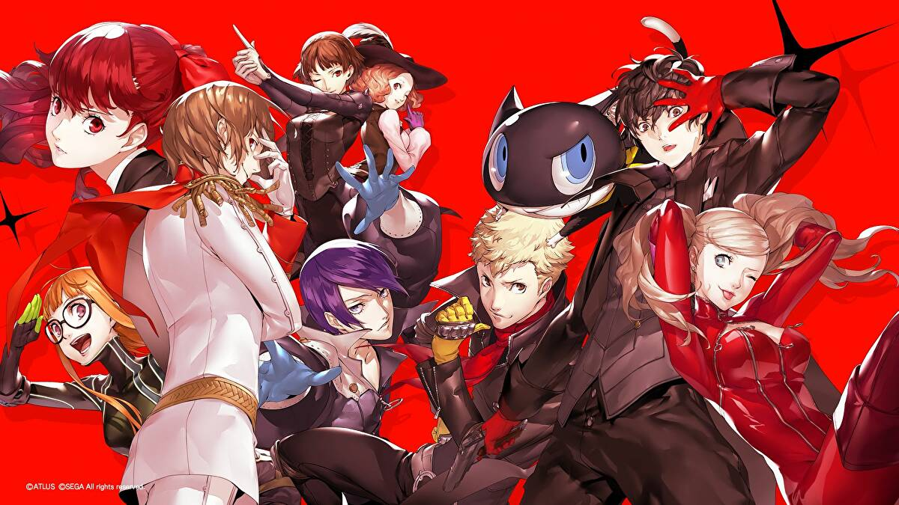
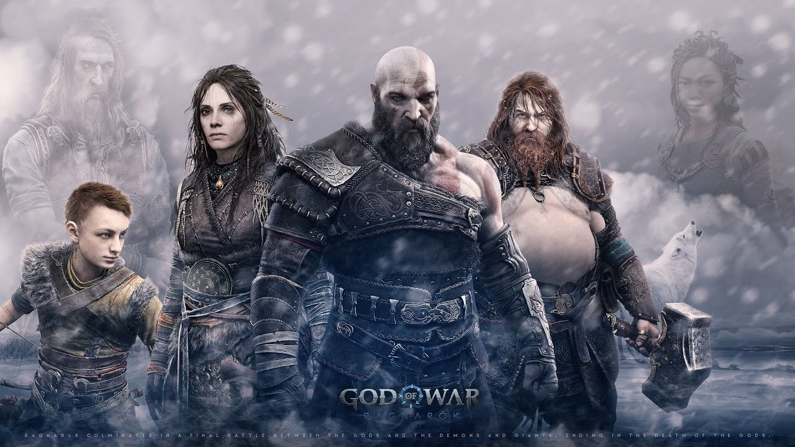
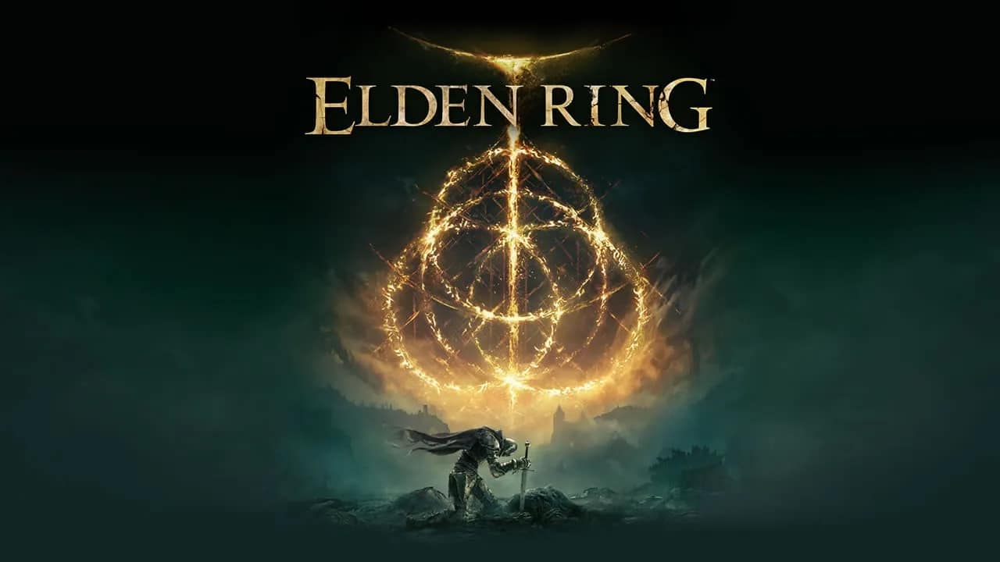

Top 5 Melhores Jogos de 2022
5. The Stanley Parable: Ultra Deluxe (PS5) — Nota: 89
Originalmente previsto para 2020, The Stanley Parable: Ultra Deluxe estreou só em abril de 2022 — e conquistou seu merecido lugar neste top 10. Ele é avaliado com 89 pontos no Metacritic. O game de exploração em primeira pessoa coloca os jogadores em meio a um mistério dentro do escritório de Stanley. Todos os funcionários simplesmente desapareceram, e o protagonista tem de seguir regras impostas por um desconhecido para escapar de uma ameaça invisível.
4. Persona 5 Royal (PS5) — Nota: 91

A versão de Persona 5 Royal para a nova geração também deu o que falar. O port da Atlus vem acompanhado de todos os 45 DLCs, que foram chegando ao longo dos anos desde o lançamento da edição base em 2016. Sua média no Metacritic. é de 91 pontos.
3. God of War Ragnarök — Nota: 94

Um dos melhores jogos de 2022 no PlayStation, God of War Ragnarök mostrou à que veio e conseguiu respeitáveis 94 pontos no Metacritic. Recheado de acontecimentos marcantes da mitologia nórdica, a sequência é uma montanha-russa de emoções — isso sem mencionar o gameplay brutal e os gráficos de tirar o fôlego.
2. The Witcher 3: Wild Hunt (PS5) — Nota: 96

O port de The Witcher 3: Wild Hunt para a nova geração chegou recentemente, e sua média de 96 pontos no Metacritic impressionou. O “remaster” da terceira aventura do bruxão está entre os melhores jogos de 2022 e oferece dois modos de reprodução, suporte ao DualSense e tempos de carregamento extremamente rápidos.
1. Elden Ring — Nota: 96

Consagrado com o caneco de Jogo do Ano, Elden Ring possui uma das maiores notas de 2022 no Metacritic (96 pontos). Desenvolvido pela FromSoftware, o título tem uma história criada por Hidetaka Miyazaki e George R. R. Martin, além de um mundo aberto recheado de sidequests e um gameplay bastante desafiador — motivo pelo qual o gênero soulslike é bem conhecido.
Postagens recentes
O metaverso terá um direcionamento definido ainda este ano, bem como haverá o avanço na tecnologia blockchain e o desenvolvimento da computação quântica.
Saiba Mais